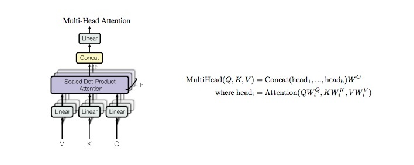

Transformers
Contents
Transformers#
Overview#
This notebook implements Transformer model for HCP (movie watching) data
Transformers were first present by Vaswani, et al. in their paper Attention Is All You Need.
Data Organization#
Same as in the gru + attention notebook
import torch
import pickle
import numpy as np
import torch.nn as nn
with open('Data/HCP_movie_watching.pkl','rb') as f:
TS = pickle.load(f)
print(TS.keys())
dict_keys(['testretest', 'twomen', 'bridgeville', 'pockets', 'overcome', 'inception', 'socialnet', 'oceans', 'flower', 'hotel', 'garden', 'dreary', 'homealone', 'brokovich', 'starwars'])
rel = {}
l = 0
for movie_name, ts in TS.items():
rel[movie_name] = l
l += 1
print(movie_name, ts.shape)
testretest (4, 176, 84, 300)
twomen (176, 245, 300)
bridgeville (176, 222, 300)
pockets (176, 189, 300)
overcome (176, 65, 300)
inception (176, 227, 300)
socialnet (176, 260, 300)
oceans (176, 250, 300)
flower (176, 181, 300)
hotel (176, 186, 300)
garden (176, 205, 300)
dreary (176, 143, 300)
homealone (176, 233, 300)
brokovich (176, 231, 300)
starwars (176, 256, 300)
train_feature = []
test_feature = []
train_target = []
test_target = []
seq_length = 198
for movie_name, ts in TS.items():
pep = 0
if movie_name != "testretest":
for i in ts:
pep += 1
if (pep <= 100):
if i.shape[0]>seq_length:
k = i[:seq_length][:]
train_feature.append(k)
train_target.append(rel[movie_name])
k = i[i.shape[0]-seq_length:][:]
train_feature.append(k)
train_target.append(rel[movie_name])
elif i.shape[0]<seq_length:
k = [[0]*300]*seq_length
k[seq_length-i.shape[0]:] = i
train_feature.append(k)
train_target.append(rel[movie_name])
else:
train_feature.append(i)
train_target.append(rel[movie_name])
else:
if i.shape[0]>seq_length:
k = i[:seq_length][:]
test_feature.append(k)
test_target.append(rel[movie_name])
k = i[i.shape[0]-seq_length:][:]
test_feature.append(k)
test_target.append(rel[movie_name])
elif i.shape[0]<seq_length:
k = [[0]*300]*seq_length
k[seq_length-i.shape[0]:] = i
test_feature.append(k)
test_target.append(rel[movie_name])
else:
test_feature.append(i)
test_target.append(rel[movie_name])
print(pep)
else:
for jj in ts:
pep = 0
for i in jj:
pep += 1
if (pep <= 101):
if i.shape[0]>seq_length:
k = i[:seq_length][:]
train_feature.append(k)
train_target.append(rel[movie_name])
k = i[i.shape[0]-seq_length:][:]
train_feature.append(k)
train_target.append(rel[movie_name])
elif i.shape[0]<seq_length:
k = [[0]*300]*seq_length
k[seq_length-i.shape[0]:] = i
train_feature.append(k)
train_target.append(rel[movie_name])
else:
train_feature.append(i)
train_target.append(rel[movie_name])
else:
if i.shape[0]>seq_length:
k = i[:seq_length][:]
test_feature.append(k)
test_target.append(rel[movie_name])
k = i[i.shape[0]-seq_length:][:]
test_feature.append(k)
test_target.append(rel[movie_name])
elif i.shape[0]<seq_length:
k = [[0]*300]*seq_length
k[seq_length-i.shape[0]:] = i
test_feature.append(k)
test_target.append(rel[movie_name])
else:
test_feature.append(i)
test_target.append(rel[movie_name])
print(pep)
176
176
176
176
176
176
176
176
176
176
176
176
176
176
176
176
176
176
from torch.utils.data import TensorDataset, DataLoader
train_data = TensorDataset(torch.from_numpy(np.array(train_feature)).float(),torch.from_numpy(np.array(train_target)).float())
test_data = TensorDataset(torch.from_numpy(np.array(test_feature)).float(),torch.from_numpy(np.array(test_target)).float())
from torch.utils.data.sampler import SubsetRandomSampler
batch_size = 32
valid_data = 0.25
t_train = len(train_data)
data_no = list(range(t_train))
np.random.shuffle(data_no)
split_no = int(np.ceil(valid_data*t_train))
train,valid = data_no[split_no:],data_no[:split_no]
train_sampler = SubsetRandomSampler(train)
valid_sampler = SubsetRandomSampler(valid)
train_loader = DataLoader(train_data,batch_size=batch_size,sampler=train_sampler,drop_last=True)
valid_loader = DataLoader(train_data,sampler=valid_sampler,batch_size=batch_size,drop_last=True)
test_loader = DataLoader(test_data, batch_size=batch_size,shuffle = True)
is_cuda = torch.cuda.is_available()
if is_cuda:
device = torch.device("cuda")
else:
device = torch.device("cpu")
device
device(type='cuda')
Modelling#
Positional Encodings#

class PositionalEncoding(nn.Module):
def __init__(self, d_model, seq_len):
"""
:param d_model: dimension of model
:param max_len: max sequence length
:param device: hardware device setting
"""
super(PositionalEncoding, self).__init__()
# same size with input matrix (for adding with input matrix)
self.encoding = torch.zeros(seq_len, d_model, device=device)
self.encoding.requires_grad = False
pos = torch.arange(0, seq_len, device=device)
pos = pos.float().unsqueeze(dim=1)
# 1D => 2D unsqueeze to represent position
_2i = torch.arange(0, d_model, step=2, device=device).float()
# 'i' means index of d_model (e.g. embedding size = 50, 'i' = [0,50])
# "step=2" means 'i' multiplied with two (same with 2 * i)
self.encoding[:, 0::2] = torch.sin(pos / (10000 ** (_2i / d_model)))
self.encoding[:, 1::2] = torch.cos(pos / (10000 ** (_2i / d_model)))
# compute positional encoding to consider positional information
def forward(self, x):
# self.encoding
# [max_len = 512, d_model = 512]
batch_size, seq_len = x.size()
# [batch_size = 128, seq_len = 30]
return self.encoding[:seq_len, :]
# [seq_len = 30, d_model = 512]
# it will add with tok_emb : [128, 30, 512]
Self Attention#

class Attention(nn.Module):
"""
q : current sequence
k : every sequence to check relationship with Qeury
v : every seq same with Key
"""
def __init__(self):
super(Attention, self).__init__()
self.softmax = nn.Softmax(dim=-1)
def forward(self, q, k, v): # [batch_size, head, length, d_tensor]
batch_size, head, length, d_tensor = k.size()
# 1. dot product Query with Key^T to compute similarity
k_t = k.transpose(2, 3)
score = (q @ k_t) / np.sqrt(d_tensor) # scaled dot product
# 2. Masking (opt)
# 3. Softmax
score = self.softmax(score)
# 4. multiply with Value
v = score @ v
return v, score
Multi Head Attention#
class MultiHeadAttention(nn.Module):
def __init__(self, d_model, n_head):
super(MultiHeadAttention, self).__init__()
self.n_head = n_head
self.attention = Attention()
self.w_q = nn.Linear(d_model, d_model)
self.w_k = nn.Linear(d_model, d_model)
self.w_v = nn.Linear(d_model, d_model)
self.w_concat = nn.Linear(d_model, d_model)
def forward(self, q, k, v):
# 1. dot product with weight matrices
q, k, v = self.w_q(q), self.w_k(k), self.w_v(v)
# 2. split tensor by number of heads
q, k, v = self.split(q), self.split(k), self.split(v)
# 3. do scale dot product to compute similarity
out, attention = self.attention(q, k, v)#, mask=mask)
# 4. concat and pass to linear layer
out = self.concat(out)
out = self.w_concat(out)
# visualize attention map => may implement visualization
return out
def split(self, tensor):
"""
split tensor by number of head
:param tensor: [batch_size, length, d_model]
:return: [batch_size, head, length, d_tensor]
"""
batch_size, length, d_model = tensor.size()
d_tensor = d_model // self.n_head
tensor = tensor.view(batch_size, length, self.n_head, d_tensor).transpose(1, 2)
return tensor
def concat(self, tensor):
"""
:param tensor: [batch_size, head, length, d_tensor]
:return: [batch_size, length, d_model]
"""
batch_size, head, length, d_tensor = tensor.size()
d_model = head * d_tensor
tensor = tensor.transpose(1, 2).contiguous().view(batch_size, length, d_model)
return tensor
Feed Forward#
class FeedForward(nn.Module):
def __init__(self, d_model, feed_fwd, dropout = 0.1):
super().__init__()
self.l1 = nn.Linear(d_model, feed_fwd)
self.l2 = nn.Linear(feed_fwd, d_model)
self.dropout = nn.Dropout(p=dropout)
self.relu = nn.ReLU()
def forward(self, x):
x = self.dropout(self.relu(self.l1(x)))
x = self.l2(x)
return x
Transformer Block#
class TransformerBlock(nn.Module):
def __init__(self, d_model,feed_fwd ,n_heads,drop_prob):
super(TransformerBlock, self).__init__()
"""
Args:
embed_dim: dimension of the embedding
n_heads: number of attention heads
"""
self.attention = MultiHeadAttention(d_model=d_model, n_head=n_head)
self.norm1 = nn.LayerNorm(d_model)
self.norm2 = nn.LayerNorm(d_model)
self.feed_fwd = FeedForward(d_model=d_model, feed_fwd=feed_fwd, dropout=drop_prob)
self.dropout1 = nn.Dropout(p=drop_prob)
self.dropout2 = nn.Dropout(p=drop_prob)
def forward(self,x):#key,query,value):
"""
Args:
key: key vector
query: query vector
value: value vector
"""
# 1. compute self attention
_x = x
#print(x.shape)
x = self.attention(q=x, k=x, v=x)
# 2. add and norm
x = self.norm1(x + _x)
x = self.dropout1(x)
# 3. feed forward network
_x = x
x = self.feed_fwd(x)
# 4. add and norm
x = self.norm2(x + _x)
x = self.dropout2(x)
return x
Complied Model#
class Transformer_Model(nn.Module):
def __init__(self, d_model, feed_fwd, out_dim, n_layers, n_head, drop_prob):
super(Transformer_Model, self).__init__()
self.layers = nn.ModuleList([TransformerBlock(d_model, feed_fwd, n_head, drop_prob) for i in range(n_layers)])
self.linear_out = nn.Linear(d_model,out_dim)
def forward(self, x):
for layer in self.layers:
x = layer(x)#,x,x)
x = self.linear_out(x)
return x
Training#
def train(epochs,train_loader,net,valid_loader,optimzer,criterion,att=True):
val_acc = []
tr_acc = []
clip = 3 # gradient clipping
net.to(device)
net.train()
valid_loss_min = np.Inf
valid_losses = []
train_losses = []
for e in range(epochs):
num_correct = 0
train_loss = []
valid_loss = []
train_acc = 0.0
valid_acc = 0.0
counter = 0
for inputs, labels in train_loader:
inputs, labels = inputs.to(device), labels.type(torch.LongTensor).to(device)
net.zero_grad()
output = net(inputs)[:, -1, :]
#print(output[:, -1, :].shape)
pred = torch.round(output.squeeze())
top_value, top_index = torch.max(pred,1)
correct_tensor = top_index.eq(labels.float().view_as(top_index))
correct = np.squeeze(correct_tensor.to('cpu').numpy())
num_correct += np.sum(correct)
loss = criterion(output, labels)
loss.backward()
nn.utils.clip_grad_norm_(net.parameters(), clip)
optimizer.step()
train_loss.append(loss.item())
tr_acc.append(num_correct/((len(train_loader)-1)*batch_size))
acc = 0.0
val_losses = []
net.eval()
num_correct = 0
v_c = 0
for inputs, labels in valid_loader:
inputs, labels = inputs.to(device), labels.type(torch.LongTensor).to(device)
output= net(inputs)[:, -1, :]
pred = torch.round(output.squeeze())
top_value, top_index = torch.max(pred,1)
correct_tensor = top_index.eq(labels.float().view_as(top_index))
correct = np.squeeze(correct_tensor.to('cpu').numpy())
num_correct += np.sum(correct)
val_loss = criterion(output.squeeze(),labels)
val_losses.append(val_loss.item())
if val_loss.item() <= valid_loss_min:
print('Validation loss decreased ({:.6f} --> {:.6f}). Saving model ...'.format(valid_loss_min, val_loss.item()))
best_epoch = e
if att:
torch.save(net.state_dict(), 'Trns_Multi_Att.pt')
else:
torch.save(net.state_dict(), 'Trns_Single_Att.pt')
valid_loss_min = val_loss.item()
net.train()
valid_losses.append(np.mean(val_losses))
train_losses.append(np.mean(train_loss))
val_acc.append(num_correct/(len(valid_loader)*batch_size))
print('Epoch: {}/{} \tTraining Loss: {:.6f} \tValidation Loss: {:.6f}'.format(e+1,epochs,np.mean(train_loss),np.mean(val_losses)))
return train_losses,valid_losses,tr_acc,val_acc,best_epoch
epochs = 100
d_model = 300
feed_fwd = 150
output_dim = 15
n_head = 4
n_layers = 2
drop_prob = 0.0006
lr = 0.001
Multi-Head Attention (No PoE)#
model = Transformer_Model(d_model, feed_fwd, output_dim, n_layers,n_head, drop_prob)
optimizer = torch.optim.Adam(model.parameters(), lr=lr)
criterion = nn.CrossEntropyLoss()
model
Transformer_Model(
(layers): ModuleList(
(0): TransformerBlock(
(attention): MultiHeadAttention(
(attention): Attention(
(softmax): Softmax(dim=-1)
)
(w_q): Linear(in_features=300, out_features=300, bias=True)
(w_k): Linear(in_features=300, out_features=300, bias=True)
(w_v): Linear(in_features=300, out_features=300, bias=True)
(w_concat): Linear(in_features=300, out_features=300, bias=True)
)
(norm1): LayerNorm((300,), eps=1e-05, elementwise_affine=True)
(norm2): LayerNorm((300,), eps=1e-05, elementwise_affine=True)
(feed_fwd): FeedForward(
(l1): Linear(in_features=300, out_features=150, bias=True)
(l2): Linear(in_features=150, out_features=300, bias=True)
(dropout): Dropout(p=0.0006, inplace=False)
(relu): ReLU()
)
(dropout1): Dropout(p=0.0006, inplace=False)
(dropout2): Dropout(p=0.0006, inplace=False)
)
(1): TransformerBlock(
(attention): MultiHeadAttention(
(attention): Attention(
(softmax): Softmax(dim=-1)
)
(w_q): Linear(in_features=300, out_features=300, bias=True)
(w_k): Linear(in_features=300, out_features=300, bias=True)
(w_v): Linear(in_features=300, out_features=300, bias=True)
(w_concat): Linear(in_features=300, out_features=300, bias=True)
)
(norm1): LayerNorm((300,), eps=1e-05, elementwise_affine=True)
(norm2): LayerNorm((300,), eps=1e-05, elementwise_affine=True)
(feed_fwd): FeedForward(
(l1): Linear(in_features=300, out_features=150, bias=True)
(l2): Linear(in_features=150, out_features=300, bias=True)
(dropout): Dropout(p=0.0006, inplace=False)
(relu): ReLU()
)
(dropout1): Dropout(p=0.0006, inplace=False)
(dropout2): Dropout(p=0.0006, inplace=False)
)
)
(linear_out): Linear(in_features=300, out_features=15, bias=True)
)
train_losses,valid_losses,tr_acc,val_acc,best_epoch = train(epochs,train_loader,model,valid_loader,optimizer,criterion)
Validation loss decreased (inf --> 0.419096). Saving model ...
Validation loss decreased (0.419096 --> 0.348300). Saving model ...
Validation loss decreased (0.348300 --> 0.271155). Saving model ...
Epoch: 1/100 Training Loss: 1.167421 Validation Loss: 0.474327
Validation loss decreased (0.271155 --> 0.249879). Saving model ...
Validation loss decreased (0.249879 --> 0.220638). Saving model ...
Validation loss decreased (0.220638 --> 0.088878). Saving model ...
Epoch: 2/100 Training Loss: 0.273253 Validation Loss: 0.288038
Validation loss decreased (0.088878 --> 0.074936). Saving model ...
Validation loss decreased (0.074936 --> 0.063233). Saving model ...
Validation loss decreased (0.063233 --> 0.023823). Saving model ...
Epoch: 3/100 Training Loss: 0.115287 Validation Loss: 0.280523
Validation loss decreased (0.023823 --> 0.018158). Saving model ...
Validation loss decreased (0.018158 --> 0.014297). Saving model ...
Epoch: 4/100 Training Loss: 0.053292 Validation Loss: 0.190914
Validation loss decreased (0.014297 --> 0.005076). Saving model ...
Epoch: 5/100 Training Loss: 0.026572 Validation Loss: 0.153555
Epoch: 6/100 Training Loss: 0.038455 Validation Loss: 0.236173
Epoch: 7/100 Training Loss: 0.080317 Validation Loss: 0.298078
Epoch: 8/100 Training Loss: 0.126595 Validation Loss: 0.474623
Epoch: 9/100 Training Loss: 0.147446 Validation Loss: 0.427347
Epoch: 10/100 Training Loss: 0.072225 Validation Loss: 0.178902
Epoch: 11/100 Training Loss: 0.072755 Validation Loss: 0.241793
Epoch: 12/100 Training Loss: 0.150082 Validation Loss: 0.368517
Epoch: 13/100 Training Loss: 0.134242 Validation Loss: 0.285465
Validation loss decreased (0.005076 --> 0.004727). Saving model ...
Epoch: 14/100 Training Loss: 0.068325 Validation Loss: 0.225814
Epoch: 15/100 Training Loss: 0.084564 Validation Loss: 0.266099
Epoch: 16/100 Training Loss: 0.063605 Validation Loss: 0.153977
Validation loss decreased (0.004727 --> 0.003486). Saving model ...
Epoch: 17/100 Training Loss: 0.017670 Validation Loss: 0.108851
Validation loss decreased (0.003486 --> 0.002315). Saving model ...
Epoch: 18/100 Training Loss: 0.018405 Validation Loss: 0.192080
Epoch: 19/100 Training Loss: 0.035845 Validation Loss: 0.206876
Epoch: 20/100 Training Loss: 0.069308 Validation Loss: 0.223056
Epoch: 21/100 Training Loss: 0.174280 Validation Loss: 0.240203
Epoch: 22/100 Training Loss: 0.156562 Validation Loss: 0.183388
Epoch: 23/100 Training Loss: 0.138357 Validation Loss: 0.279883
Epoch: 24/100 Training Loss: 0.115099 Validation Loss: 0.228573
Epoch: 25/100 Training Loss: 0.097851 Validation Loss: 0.225635
Epoch: 26/100 Training Loss: 0.080767 Validation Loss: 0.365155
Epoch: 27/100 Training Loss: 0.086111 Validation Loss: 0.372302
Epoch: 28/100 Training Loss: 0.110598 Validation Loss: 0.242463
Epoch: 29/100 Training Loss: 0.124497 Validation Loss: 0.168974
Epoch: 30/100 Training Loss: 0.076403 Validation Loss: 0.227167
Epoch: 31/100 Training Loss: 0.070303 Validation Loss: 0.169906
Epoch: 32/100 Training Loss: 0.043659 Validation Loss: 0.188396
Epoch: 33/100 Training Loss: 0.020827 Validation Loss: 0.169567
Validation loss decreased (0.002315 --> 0.000542). Saving model ...
Epoch: 34/100 Training Loss: 0.003514 Validation Loss: 0.109756
Epoch: 35/100 Training Loss: 0.001735 Validation Loss: 0.116678
Validation loss decreased (0.000542 --> 0.000251). Saving model ...
Epoch: 36/100 Training Loss: 0.001083 Validation Loss: 0.132523
Epoch: 37/100 Training Loss: 0.000345 Validation Loss: 0.116091
Epoch: 38/100 Training Loss: 0.000179 Validation Loss: 0.118341
Validation loss decreased (0.000251 --> 0.000213). Saving model ...
Epoch: 39/100 Training Loss: 0.000150 Validation Loss: 0.118699
Epoch: 40/100 Training Loss: 0.000133 Validation Loss: 0.118696
Epoch: 41/100 Training Loss: 0.000123 Validation Loss: 0.107774
Epoch: 42/100 Training Loss: 0.000112 Validation Loss: 0.118596
Epoch: 43/100 Training Loss: 0.000103 Validation Loss: 0.118739
Epoch: 44/100 Training Loss: 0.000094 Validation Loss: 0.118918
Epoch: 45/100 Training Loss: 0.000088 Validation Loss: 0.118973
Validation loss decreased (0.000213 --> 0.000155). Saving model ...
Epoch: 46/100 Training Loss: 0.000084 Validation Loss: 0.118751
Validation loss decreased (0.000155 --> 0.000141). Saving model ...
Epoch: 47/100 Training Loss: 0.000080 Validation Loss: 0.118759
Epoch: 48/100 Training Loss: 0.000076 Validation Loss: 0.116819
Epoch: 49/100 Training Loss: 0.000071 Validation Loss: 0.118921
Epoch: 50/100 Training Loss: 0.000068 Validation Loss: 0.118884
Epoch: 51/100 Training Loss: 0.000065 Validation Loss: 0.118815
Epoch: 52/100 Training Loss: 0.000062 Validation Loss: 0.118941
Epoch: 53/100 Training Loss: 0.000058 Validation Loss: 0.117701
Epoch: 54/100 Training Loss: 0.000056 Validation Loss: 0.118714
Epoch: 55/100 Training Loss: 0.000054 Validation Loss: 0.118508
Epoch: 56/100 Training Loss: 0.000052 Validation Loss: 0.118731
Epoch: 57/100 Training Loss: 0.000049 Validation Loss: 0.118647
Epoch: 58/100 Training Loss: 0.000047 Validation Loss: 0.111005
Epoch: 59/100 Training Loss: 0.000046 Validation Loss: 0.118725
Epoch: 60/100 Training Loss: 0.000044 Validation Loss: 0.118708
Epoch: 61/100 Training Loss: 0.000042 Validation Loss: 0.118543
Epoch: 62/100 Training Loss: 0.000041 Validation Loss: 0.118755
Epoch: 63/100 Training Loss: 0.000039 Validation Loss: 0.118690
Validation loss decreased (0.000141 --> 0.000133). Saving model ...
Epoch: 64/100 Training Loss: 0.000037 Validation Loss: 0.118774
Epoch: 65/100 Training Loss: 0.000036 Validation Loss: 0.118757
Validation loss decreased (0.000133 --> 0.000128). Saving model ...
Epoch: 66/100 Training Loss: 0.000035 Validation Loss: 0.118649
Epoch: 67/100 Training Loss: 0.000034 Validation Loss: 0.118789
Validation loss decreased (0.000128 --> 0.000071). Saving model ...
Epoch: 68/100 Training Loss: 0.000033 Validation Loss: 0.118894
Validation loss decreased (0.000071 --> 0.000066). Saving model ...
Epoch: 69/100 Training Loss: 0.000032 Validation Loss: 0.118830
Epoch: 70/100 Training Loss: 0.000030 Validation Loss: 0.118937
Epoch: 71/100 Training Loss: 0.000029 Validation Loss: 0.119041
Validation loss decreased (0.000066 --> 0.000062). Saving model ...
Epoch: 72/100 Training Loss: 0.000028 Validation Loss: 0.118750
Validation loss decreased (0.000062 --> 0.000035). Saving model ...
Epoch: 73/100 Training Loss: 0.000027 Validation Loss: 0.119107
Epoch: 74/100 Training Loss: 0.000026 Validation Loss: 0.119094
Epoch: 75/100 Training Loss: 0.000026 Validation Loss: 0.119090
Epoch: 76/100 Training Loss: 0.000025 Validation Loss: 0.119150
Epoch: 77/100 Training Loss: 0.000024 Validation Loss: 0.119084
Epoch: 78/100 Training Loss: 0.000023 Validation Loss: 0.119141
Epoch: 79/100 Training Loss: 0.000022 Validation Loss: 0.119170
Epoch: 80/100 Training Loss: 0.000021 Validation Loss: 0.113376
Validation loss decreased (0.000035 --> 0.000031). Saving model ...
Epoch: 81/100 Training Loss: 0.000021 Validation Loss: 0.119243
Epoch: 82/100 Training Loss: 0.000020 Validation Loss: 0.119361
Epoch: 83/100 Training Loss: 0.000020 Validation Loss: 0.118840
Epoch: 84/100 Training Loss: 0.000019 Validation Loss: 0.119336
Epoch: 85/100 Training Loss: 0.000019 Validation Loss: 0.119314
Epoch: 86/100 Training Loss: 0.000018 Validation Loss: 0.119354
Epoch: 87/100 Training Loss: 0.000017 Validation Loss: 0.119450
Epoch: 88/100 Training Loss: 0.000017 Validation Loss: 0.119319
Epoch: 89/100 Training Loss: 0.000016 Validation Loss: 0.112770
Epoch: 90/100 Training Loss: 0.000016 Validation Loss: 0.119395
Validation loss decreased (0.000031 --> 0.000018). Saving model ...
Epoch: 91/100 Training Loss: 0.000015 Validation Loss: 0.118949
Epoch: 92/100 Training Loss: 0.000015 Validation Loss: 0.119447
Epoch: 93/100 Training Loss: 0.000014 Validation Loss: 0.119441
Epoch: 94/100 Training Loss: 0.000014 Validation Loss: 0.119442
Epoch: 95/100 Training Loss: 0.000013 Validation Loss: 0.119348
Epoch: 96/100 Training Loss: 0.000013 Validation Loss: 0.119502
Epoch: 97/100 Training Loss: 0.000013 Validation Loss: 0.119499
Epoch: 98/100 Training Loss: 0.000012 Validation Loss: 0.119601
Epoch: 99/100 Training Loss: 0.000012 Validation Loss: 0.113235
Epoch: 100/100 Training Loss: 0.000011 Validation Loss: 0.119738
import matplotlib.pyplot as plt
x = [i for i in range(1,epochs+1)]
xi = [i for i in range(0,epochs+5,5)]
xi[0] = 1
f, axis = plt.subplots(2,1)
f.set_figwidth(20)
f.set_figheight(12)
plt.subplots_adjust(top=0.8, wspace=0.2,hspace=0.3)
axis[0].plot(x,train_losses)
axis[0].plot(x,valid_losses)
axis[0].axvline(best_epoch, color='black')
axis[0].set_xticks(xi)
axis[0].set_xlabel("Epochs",fontweight="bold",color = 'Black', fontsize='15', horizontalalignment='center')
axis[0].set_ylabel("Loss",fontweight="bold",color = 'Black', fontsize='15', horizontalalignment='center')
axis[0].set_title("Losses (with Multi-Head Attention)",fontweight='bold',color = 'Black', fontsize='15', horizontalalignment='center')
axis[0].legend(["Training Loss","Valid Loss",f"Best Epoch= {best_epoch}"])
axis[1].plot(x,tr_acc)
axis[1].plot(x,val_acc)
axis[1].set_xticks(xi)
axis[1].set_xlabel("Epochs", fontweight='bold',color = 'Black', fontsize='15', horizontalalignment='center')
axis[1].set_ylabel("Accuracy",fontweight='bold',color = 'Black', fontsize='15', horizontalalignment='center')
axis[1].set_title("Accuracies (with Multi-Head Attention)",fontweight='bold',color = 'Black', fontsize='15', horizontalalignment='center')
axis[1].legend(["Training Accuracy","Valid Accuracy"]);
Single-Head Attention (No PoE)#
n_head = 1
model = Transformer_Model(d_model, feed_fwd, output_dim, n_layers,n_head, drop_prob)
optimizer = torch.optim.Adam(model.parameters(), lr=lr)
criterion = nn.CrossEntropyLoss()
model
Transformer_Model(
(layers): ModuleList(
(0): TransformerBlock(
(attention): MultiHeadAttention(
(attention): Attention(
(softmax): Softmax(dim=-1)
)
(w_q): Linear(in_features=300, out_features=300, bias=True)
(w_k): Linear(in_features=300, out_features=300, bias=True)
(w_v): Linear(in_features=300, out_features=300, bias=True)
(w_concat): Linear(in_features=300, out_features=300, bias=True)
)
(norm1): LayerNorm((300,), eps=1e-05, elementwise_affine=True)
(norm2): LayerNorm((300,), eps=1e-05, elementwise_affine=True)
(feed_fwd): FeedForward(
(l1): Linear(in_features=300, out_features=150, bias=True)
(l2): Linear(in_features=150, out_features=300, bias=True)
(dropout): Dropout(p=0.0006, inplace=False)
(relu): ReLU()
)
(dropout1): Dropout(p=0.0006, inplace=False)
(dropout2): Dropout(p=0.0006, inplace=False)
)
(1): TransformerBlock(
(attention): MultiHeadAttention(
(attention): Attention(
(softmax): Softmax(dim=-1)
)
(w_q): Linear(in_features=300, out_features=300, bias=True)
(w_k): Linear(in_features=300, out_features=300, bias=True)
(w_v): Linear(in_features=300, out_features=300, bias=True)
(w_concat): Linear(in_features=300, out_features=300, bias=True)
)
(norm1): LayerNorm((300,), eps=1e-05, elementwise_affine=True)
(norm2): LayerNorm((300,), eps=1e-05, elementwise_affine=True)
(feed_fwd): FeedForward(
(l1): Linear(in_features=300, out_features=150, bias=True)
(l2): Linear(in_features=150, out_features=300, bias=True)
(dropout): Dropout(p=0.0006, inplace=False)
(relu): ReLU()
)
(dropout1): Dropout(p=0.0006, inplace=False)
(dropout2): Dropout(p=0.0006, inplace=False)
)
)
(linear_out): Linear(in_features=300, out_features=15, bias=True)
)
train_losses,valid_losses,tr_acc,val_acc,best_epoch = train(epochs,train_loader,model,valid_loader,optimizer,criterion,att=False)
Validation loss decreased (inf --> 0.391958). Saving model ...
Validation loss decreased (0.391958 --> 0.238264). Saving model ...
Epoch: 1/100 Training Loss: 1.175492 Validation Loss: 0.596091
Validation loss decreased (0.238264 --> 0.233604). Saving model ...
Validation loss decreased (0.233604 --> 0.167538). Saving model ...
Epoch: 2/100 Training Loss: 0.354066 Validation Loss: 0.460645
Validation loss decreased (0.167538 --> 0.151649). Saving model ...
Validation loss decreased (0.151649 --> 0.124948). Saving model ...
Validation loss decreased (0.124948 --> 0.086300). Saving model ...
Epoch: 3/100 Training Loss: 0.219174 Validation Loss: 0.269185
Validation loss decreased (0.086300 --> 0.039770). Saving model ...
Epoch: 4/100 Training Loss: 0.102423 Validation Loss: 0.270010
Epoch: 5/100 Training Loss: 0.086554 Validation Loss: 0.301405
Validation loss decreased (0.039770 --> 0.039577). Saving model ...
Epoch: 6/100 Training Loss: 0.086857 Validation Loss: 0.263694
Validation loss decreased (0.039577 --> 0.032123). Saving model ...
Epoch: 7/100 Training Loss: 0.074488 Validation Loss: 0.306995
Epoch: 8/100 Training Loss: 0.094254 Validation Loss: 0.538530
Epoch: 9/100 Training Loss: 0.204937 Validation Loss: 0.437959
Epoch: 10/100 Training Loss: 0.165254 Validation Loss: 0.323132
Epoch: 11/100 Training Loss: 0.120053 Validation Loss: 0.407438
Validation loss decreased (0.032123 --> 0.023595). Saving model ...
Epoch: 12/100 Training Loss: 0.087407 Validation Loss: 0.247474
Epoch: 13/100 Training Loss: 0.049321 Validation Loss: 0.372628
Epoch: 14/100 Training Loss: 0.103018 Validation Loss: 0.455646
Epoch: 15/100 Training Loss: 0.084127 Validation Loss: 0.324793
Epoch: 16/100 Training Loss: 0.057933 Validation Loss: 0.373571
Epoch: 17/100 Training Loss: 0.069996 Validation Loss: 0.364863
Validation loss decreased (0.023595 --> 0.019925). Saving model ...
Epoch: 18/100 Training Loss: 0.093191 Validation Loss: 0.356267
Epoch: 19/100 Training Loss: 0.097683 Validation Loss: 0.376935
Epoch: 20/100 Training Loss: 0.090195 Validation Loss: 0.400248
Epoch: 21/100 Training Loss: 0.139577 Validation Loss: 0.376872
Epoch: 22/100 Training Loss: 0.075088 Validation Loss: 0.416233
Epoch: 23/100 Training Loss: 0.061791 Validation Loss: 0.382138
Epoch: 24/100 Training Loss: 0.041535 Validation Loss: 0.270863
Validation loss decreased (0.019925 --> 0.013579). Saving model ...
Epoch: 25/100 Training Loss: 0.032361 Validation Loss: 0.348127
Validation loss decreased (0.013579 --> 0.006455). Saving model ...
Epoch: 26/100 Training Loss: 0.061830 Validation Loss: 0.337312
Epoch: 27/100 Training Loss: 0.046181 Validation Loss: 0.401832
Epoch: 28/100 Training Loss: 0.038529 Validation Loss: 0.371909
Epoch: 29/100 Training Loss: 0.075323 Validation Loss: 0.433991
Epoch: 30/100 Training Loss: 0.180854 Validation Loss: 0.593087
Epoch: 31/100 Training Loss: 0.156351 Validation Loss: 0.427124
Epoch: 32/100 Training Loss: 0.130058 Validation Loss: 0.544887
Epoch: 33/100 Training Loss: 0.072185 Validation Loss: 0.505194
Epoch: 34/100 Training Loss: 0.066385 Validation Loss: 0.329890
Epoch: 35/100 Training Loss: 0.031211 Validation Loss: 0.240549
Validation loss decreased (0.006455 --> 0.004878). Saving model ...
Epoch: 36/100 Training Loss: 0.034897 Validation Loss: 0.252278
Validation loss decreased (0.004878 --> 0.004550). Saving model ...
Epoch: 37/100 Training Loss: 0.014964 Validation Loss: 0.231225
Epoch: 38/100 Training Loss: 0.014406 Validation Loss: 0.439774
Epoch: 39/100 Training Loss: 0.189116 Validation Loss: 0.355788
Epoch: 40/100 Training Loss: 0.125962 Validation Loss: 0.405906
Epoch: 41/100 Training Loss: 0.100440 Validation Loss: 0.362860
Validation loss decreased (0.004550 --> 0.004097). Saving model ...
Epoch: 42/100 Training Loss: 0.050847 Validation Loss: 0.267490
Epoch: 43/100 Training Loss: 0.051590 Validation Loss: 0.404651
Epoch: 44/100 Training Loss: 0.047694 Validation Loss: 0.368295
Epoch: 45/100 Training Loss: 0.026805 Validation Loss: 0.312658
Epoch: 46/100 Training Loss: 0.019663 Validation Loss: 0.444956
Epoch: 47/100 Training Loss: 0.044188 Validation Loss: 0.311422
Epoch: 48/100 Training Loss: 0.087120 Validation Loss: 0.436162
Epoch: 49/100 Training Loss: 0.092775 Validation Loss: 0.292307
Epoch: 50/100 Training Loss: 0.093506 Validation Loss: 0.284674
Epoch: 51/100 Training Loss: 0.075537 Validation Loss: 0.386941
Epoch: 52/100 Training Loss: 0.171912 Validation Loss: 0.484137
Epoch: 53/100 Training Loss: 0.119008 Validation Loss: 0.263970
Epoch: 54/100 Training Loss: 0.198309 Validation Loss: 0.410688
Epoch: 55/100 Training Loss: 0.225071 Validation Loss: 0.372726
Epoch: 56/100 Training Loss: 0.166854 Validation Loss: 0.386688
Epoch: 57/100 Training Loss: 0.112449 Validation Loss: 0.251659
Epoch: 58/100 Training Loss: 0.049912 Validation Loss: 0.403182
Epoch: 59/100 Training Loss: 0.026147 Validation Loss: 0.366033
Epoch: 60/100 Training Loss: 0.028983 Validation Loss: 0.351291
Epoch: 61/100 Training Loss: 0.029993 Validation Loss: 0.354805
Epoch: 62/100 Training Loss: 0.032850 Validation Loss: 0.344557
Epoch: 63/100 Training Loss: 0.059420 Validation Loss: 0.240876
Epoch: 64/100 Training Loss: 0.060734 Validation Loss: 0.331974
Epoch: 65/100 Training Loss: 0.062588 Validation Loss: 0.247822
Epoch: 66/100 Training Loss: 0.046555 Validation Loss: 0.289476
Epoch: 67/100 Training Loss: 0.037840 Validation Loss: 0.301027
Epoch: 68/100 Training Loss: 0.056781 Validation Loss: 0.286933
Epoch: 69/100 Training Loss: 0.032541 Validation Loss: 0.348536
Epoch: 70/100 Training Loss: 0.051335 Validation Loss: 0.385422
Epoch: 71/100 Training Loss: 0.032524 Validation Loss: 0.344374
Epoch: 72/100 Training Loss: 0.029060 Validation Loss: 0.224917
Epoch: 73/100 Training Loss: 0.052855 Validation Loss: 0.339095
Epoch: 74/100 Training Loss: 0.108798 Validation Loss: 0.369267
Epoch: 75/100 Training Loss: 0.102550 Validation Loss: 0.574988
Epoch: 76/100 Training Loss: 0.148680 Validation Loss: 0.378233
Epoch: 77/100 Training Loss: 0.049345 Validation Loss: 0.217671
Epoch: 78/100 Training Loss: 0.044021 Validation Loss: 0.322248
Epoch: 79/100 Training Loss: 0.077643 Validation Loss: 0.331107
Epoch: 80/100 Training Loss: 0.077117 Validation Loss: 0.339089
Epoch: 81/100 Training Loss: 0.069348 Validation Loss: 0.482914
Validation loss decreased (0.004097 --> 0.002421). Saving model ...
Epoch: 82/100 Training Loss: 0.099981 Validation Loss: 0.378343
Epoch: 83/100 Training Loss: 0.035179 Validation Loss: 0.232519
Epoch: 84/100 Training Loss: 0.025362 Validation Loss: 0.277397
Epoch: 85/100 Training Loss: 0.029229 Validation Loss: 0.308541
Epoch: 86/100 Training Loss: 0.040908 Validation Loss: 0.331862
Epoch: 87/100 Training Loss: 0.036090 Validation Loss: 0.311562
Epoch: 88/100 Training Loss: 0.056523 Validation Loss: 0.288873
Epoch: 89/100 Training Loss: 0.044946 Validation Loss: 0.323439
Epoch: 90/100 Training Loss: 0.030793 Validation Loss: 0.288395
Epoch: 91/100 Training Loss: 0.042225 Validation Loss: 0.302127
Epoch: 92/100 Training Loss: 0.093201 Validation Loss: 0.255750
Epoch: 93/100 Training Loss: 0.085302 Validation Loss: 0.416027
Epoch: 94/100 Training Loss: 0.072850 Validation Loss: 0.312574
Epoch: 95/100 Training Loss: 0.061851 Validation Loss: 0.341400
Epoch: 96/100 Training Loss: 0.110735 Validation Loss: 0.376319
Epoch: 97/100 Training Loss: 0.072395 Validation Loss: 0.268279
Epoch: 98/100 Training Loss: 0.043054 Validation Loss: 0.271644
Epoch: 99/100 Training Loss: 0.024680 Validation Loss: 0.363348
Epoch: 100/100 Training Loss: 0.036942 Validation Loss: 0.256300
x = [i for i in range(1,epochs+1)]
xi = [i for i in range(0,epochs+5,5)]
xi[0] = 1
f, axis = plt.subplots(2,1)
f.set_figwidth(20)
f.set_figheight(12)
plt.subplots_adjust(top=0.8, wspace=0.2,hspace=0.3)
axis[0].plot(x,train_losses)
axis[0].plot(x,valid_losses)
axis[0].axvline(best_epoch, color='black')
axis[0].set_xticks(xi)
axis[0].set_xlabel("Epochs",fontweight="bold",color = 'Black', fontsize='15', horizontalalignment='center')
axis[0].set_ylabel("Loss",fontweight="bold",color = 'Black', fontsize='15', horizontalalignment='center')
axis[0].set_title("Losses (with 1-Head Attention)",fontweight='bold',color = 'Black', fontsize='15', horizontalalignment='center')
axis[0].legend(["Training Loss","Valid Loss",f"Best Epoch= {best_epoch}"])
axis[1].plot(x,tr_acc)
axis[1].plot(x,val_acc)
axis[1].set_xticks(xi)
axis[1].set_xlabel("Epochs", fontweight='bold',color = 'Black', fontsize='15', horizontalalignment='center')
axis[1].set_ylabel("Accuracy",fontweight='bold',color = 'Black', fontsize='15', horizontalalignment='center')
axis[1].set_title("Accuracies (with 1-Head Attention)",fontweight='bold',color = 'Black', fontsize='15', horizontalalignment='center')
axis[1].legend(["Training Accuracy","Valid Accuracy"]);
Testing#
def test(test_loader,net):
net.to(device)
net.eval()
num_correct = 0
valid_acc = 0
for inputs, labels in test_loader:
inputs, labels = inputs.to(device), labels.type(torch.LongTensor).to(device)
output = net(inputs)[:,-1,:]
pred = torch.round(output.squeeze())
top_value, top_index = torch.max(pred,1)
correct_tensor = top_index.eq(labels.float().view_as(top_index))
correct = np.squeeze(correct_tensor.to('cpu').numpy())
num_correct += np.sum(correct)
test_acc = num_correct/((len(test_loader)-1)*batch_size)
print("Test accuracy: {:.3f} %".format(test_acc*100))
Multi-Head Attention (No PoE)#
model = Transformer_Model(d_model, feed_fwd, output_dim, n_layers, n_head, drop_prob)
model.load_state_dict(torch.load('Trns_Multi_Att.pt'))
<All keys matched successfully>
test(test_loader,model)
Test accuracy: 98.214 %
Single-Head Attention (No PoE)#
model = Transformer_Model(d_model, feed_fwd, output_dim, n_layers, n_head, drop_prob)
model.load_state_dict(torch.load('Trns_Single_Att.pt'))
<All keys matched successfully>
test(test_loader,model)
Test accuracy: 93.105 %